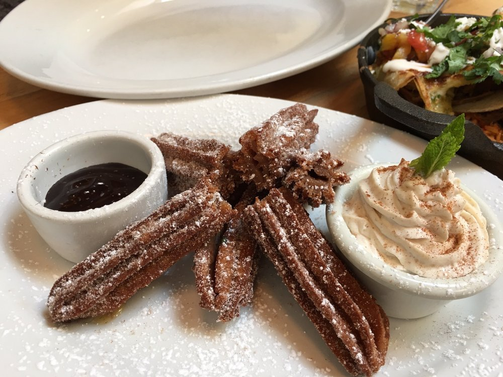

One thing I like to do, when spending time with friends, is exploring and finding new restaurants and cafés! On this page, you'll find the best coffee shops, brunch spots, and dinner stops that I know of in or around San Francisco. Keep some of these in mind the next time you're in the Bay Area - you won't regret it (and your friends and family will thank you for it too) !
YOU KNOW WHAT SOUNDS BOMB RN?
for the caffiends
-
Andytown Coffee Roasters, Outer Sunset
Oat Milk Latte w/ Housemade Whip
-
Asha Tea House, Financial District
Hong Kong Milk Tea w/ Boba
-
Breadbelly, Inner Richmond
Iced 50/50
-
Home Coffee Roasters, Outer Richmond
Rose Latte w/ Oat Milk
-
Klatch Coffee, Lower Pacific Heights
Housemade Vanilla Latte
-
Snowbird Coffee, Inner Sunset
Spaniard Latte

you had me at brunch
-
Brenda's French Soul Food, Tenderloin
Flight Beignets
-
Eats, Inner Richmond
Spicy Tomato Skillet
-
Lokma, Outer Richmond
Turkish Breakfast For 2
-
Padrecito, Cole Valley
Pancakes de Platano
-
Sweet Maple, Lower Pacific Heights
Blackstone Eggs Benedict
-
The Butcher's Son, Downtown Berkeley
BBQ Pulled Pork Sandwich
winner winner! what's for dinner?
-
Aria Korean Street Food, Lower Nob Hill
Bulgogi Kimbap
Korean Fried Chicken
-
Burma Superstar, Inner Richmond
Tea Leaf Salad
Nan Pia Dok
-
Kevin's Noodle House, Outer Sunset
Spring Rolls w/ Peanut Sauce
Special Combo Pho Bowl (M)
-
Rhea's Deli & Market, Mission District
Korean Steak Sandwich
Valencia St. Sandwich
-
San Tung, Inner Sunset
Dry Black Bean Sauce Noodles
Dry Fried Flounder Fillet
-
Souvla, Hayes Valley
Greek Fries
Pork Shoulder Sandwich